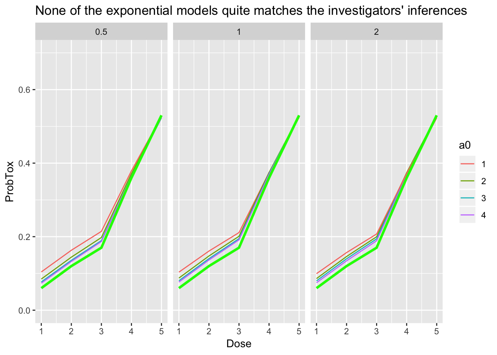

CRM Case Study 1 - Levy et al (2006)
Kristian Brock
2019-05-17
Source:vignettes/LevyCaseStudy.Rmd
LevyCaseStudy.RmdThe Continual Reassessment Method (CRM) for dose-finding is introduced in its own article. This vignette reproduces the analysis in a real dose-finding trial that used the CRM by Levy et al. (2006). The chosen example is particularly attractive because the authors present sequential analyses of their dose decisions in their Table 1, allowing us the opportunity to reproduce their analysis.
The authors investigate five doses of semisynthetic homoharringtonine (ssHHT), seeking a dose associated with a dose-limiting toxicity (DLT) probability of approximately 33%. The specific doses and the investigators’ initial beliefs on the probabilities of DLT are:
library(dplyr)
tibble(
`Dose-level` = 1:5,
`Dose (mg/m2 per day)` = c(0.5, 1, 3, 5, 6),
`Prior Pr(DLT)` = c(0.05, 0.1, 0.15, 0.33, 0.5)
) %>% knitr::kable()| Dose-level | Dose (mg/m2 per day) | Prior Pr(DLT) |
|---|---|---|
| 1 | 0.5 | 0.05 |
| 2 | 1.0 | 0.10 |
| 3 | 3.0 | 0.15 |
| 4 | 5.0 | 0.33 |
| 5 | 6.0 | 0.50 |
We are not told the exact details of the model form or the parameter prior(s) used. However, we are told that the BPCT software was used to calculate the recommended doses. Zohar et al. (2003) describe the software as using a one-parameter logistic model with fixed-value intercept taking possible values 1, 2, 3 or 4, and exponential or uniform priors on the gradient term with expected value 0.5, 1 or 2. For the purposes of this article, we assume that the investigators used a one-parameter logistic CRM with the intercept term fixed at \(a_0 = 1\) and an Exponential(1) = Gamma(1, 1) prior on \(\beta\). In the appendix, we describe an attempt to identify the exact parameterisation used by comparing a broad array of model fits.
Prior beliefs
library(trialr)
#> Loading required package: Rcpp
target <- 0.33
skeleton <- c(0.05, 0.1, 0.15, 0.33, 0.5)
fit0 <- crm_prior_beliefs(skeleton, target, model = 'logistic_gamma',
a0 = 1, beta_shape = 1, beta_inverse_scale = 1)fit0
#> No patients have been treated.
#>
#> DoseLevel Skeleton N Tox ProbTox MedianProbTox ProbMTD
#> 1 1 0.05 0 0 0.270 0.203 0.422
#> 2 2 0.10 0 0 0.311 0.286 0.063
#> 3 3 0.15 0 0 0.343 0.345 0.110
#> 4 4 0.33 0 0 0.441 0.494 0.182
#> 5 5 0.50 0 0 0.542 0.599 0.223
#>
#> The model targets a toxicity level of 0.33.
#> The dose with estimated toxicity probability closest to target is 3.
#> The dose most likely to be the MTD is 1.
#> Model entropy: 1.43Notice that both the prior mean (ProbTox) and median (MedianProbTox) probabilities of toxicity are quite far from the skeleton.
In an ordinary regression model, fixing the intercept will affect the gradient. The same is true here:
library(tidyr)
library(purrr)
library(ggplot2)
get_prior_fit <- function(a0) {
crm_prior_beliefs(skeleton, target,
model = 'logistic_gamma', a0 = a0,
beta_shape = 1, beta_inverse_scale = 1)
}
tibble(a0 = c(-1, 0, 1, 2, 3, 4)) %>%
mutate(Mod = map(a0, get_prior_fit)) %>%
mutate(
Dose = Mod %>% map("dose_indices"),
ProbTox = Mod %>% map("prob_tox"),
) %>%
select(-Mod) %>%
unnest() %>%
mutate(a0 = factor(a0)) %>%
ggplot(aes(x = Dose, y = ProbTox, group = a0, col = a0)) +
geom_line() +
ylim(0, 1) +
labs(title = 'Prior Prob(DLT) location is affected by the fixed intercept, a0')
Cohort 1
The trial starts at the lowest dose, 0.5 mg/m2 per day. Three patients are treated and none experiences DLT.
fit1 <- stan_crm(outcome_str = '1NNN',
skeleton = skeleton, target = target, model = 'logistic_gamma',
a0 = 1, beta_shape = 1, beta_inverse_scale = 1,
seed = 123, control = list(adapt_delta = 0.99))fit1
#> Patient Dose Toxicity Weight
#> 1 1 1 0 1
#> 2 2 1 0 1
#> 3 3 1 0 1
#>
#> DoseLevel Skeleton N Tox ProbTox MedianProbTox ProbMTD
#> 1 1 0.05 3 0 0.0837 0.0208 0.0875
#> 2 2 0.10 0 0 0.1180 0.0505 0.0437
#> 3 3 0.15 0 0 0.1490 0.0859 0.1108
#> 4 4 0.33 0 0 0.2654 0.2495 0.2873
#> 5 5 0.50 0 0 0.4123 0.4427 0.4708
#>
#> The model targets a toxicity level of 0.33.
#> The dose with estimated toxicity probability closest to target is 4.
#> The dose most likely to be the MTD is 5.
#> Model entropy: 1.31We see that the cohort has a great bearing on the predicted rates of toxicity. The trialists report estimated DLT probabilities of 0.001, 0.003, 0.006, 0.035, 0.11. The values calculated by trialr diverge somewhat from those values. It is difficult to know why this is given such a small sample size.
Dose-level 5 is recommended for the next cohort. The trialists understandably resist the desire to skip three doses in going from the lowest to highest dose, electing instead to skip the second dose and treat the next cohort at dose-level 3.
Cohort 2
This cohort of three was treated at 3 mg/m2 per day. One DLT was seen.
fit2 <- stan_crm(outcome_str = '1NNN 3NNT',
skeleton = skeleton, target = target, model = 'logistic_gamma',
a0 = 1, beta_shape = 1, beta_inverse_scale = 1,
seed = 123, control = list(adapt_delta = 0.99))fit2
#> Patient Dose Toxicity Weight
#> 1 1 1 0 1
#> 2 2 1 0 1
#> 3 3 1 0 1
#> 4 4 3 0 1
#> 5 5 3 0 1
#> 6 6 3 1 1
#>
#> DoseLevel Skeleton N Tox ProbTox MedianProbTox ProbMTD
#> 1 1 0.05 3 0 0.147 0.101 0.1588
#> 2 2 0.10 0 0 0.203 0.171 0.0963
#> 3 3 0.15 3 1 0.250 0.230 0.2190
#> 4 4 0.33 0 0 0.397 0.407 0.3842
#> 5 5 0.50 0 0 0.533 0.548 0.1417
#>
#> The model targets a toxicity level of 0.33.
#> The dose with estimated toxicity probability closest to target is 4.
#> The dose most likely to be the MTD is 4.
#> Model entropy: 1.49The trialists report Prob(DLT) = (0.07, 0.14, 0.19, 0.39, 0.55). The median estimates from trialr are now quite close to these values. Despite the observation of a DLT and the observed DLT-rate at dos-level 3 matching the target of 33%, the model advocates escalation to dose-level 4. That is what the investigators did.
Cohort 3
This cohort of three was treated at dose-level 4, which corresponds to 5 mg/m2 per day. Once again, one DLT was seen.
fit3 <- stan_crm(outcome_str = '1NNN 3NNT 4NNT',
skeleton = skeleton, target = target, model = 'logistic_gamma',
a0 = 1, beta_shape = 1, beta_inverse_scale = 1,
seed = 123, control = list(adapt_delta = 0.99))fit3
#> Patient Dose Toxicity Weight
#> 1 1 1 0 1
#> 2 2 1 0 1
#> 3 3 1 0 1
#> 4 4 3 0 1
#> 5 5 3 0 1
#> 6 6 3 1 1
#> 7 7 4 0 1
#> 8 8 4 0 1
#> 9 9 4 1 1
#>
#> DoseLevel Skeleton N Tox ProbTox MedianProbTox ProbMTD
#> 1 1 0.05 3 0 0.129 0.0904 0.1027
#> 2 2 0.10 0 0 0.186 0.1569 0.0875
#> 3 3 0.15 3 1 0.235 0.2153 0.2370
#> 4 4 0.33 3 1 0.389 0.3935 0.4557
#> 5 5 0.50 0 0 0.531 0.5402 0.1170
#>
#> The model targets a toxicity level of 0.33.
#> The dose with estimated toxicity probability closest to target is 4.
#> The dose most likely to be the MTD is 4.
#> Model entropy: 1.40The trialists report Prob(DLT) = (0.07, 0.13, 0.19, 0.38, 0.54) after this cohort, barely shifting from the previous estimates. This time the model advocates to remain at dose-level 4 and that is exactly what the trialists did.
Cohort 4
This cohort of three was also treated at dose-level 4. No DLTs were seen in this cohort.
fit4 <- stan_crm(outcome_str = '1NNN 3NNT 4NNT 4NNN',
skeleton = skeleton, target = target, model = 'logistic_gamma',
a0 = 1, beta_shape = 1, beta_inverse_scale = 1,
seed = 123, control = list(adapt_delta = 0.99))fit4
#> Patient Dose Toxicity Weight
#> 1 1 1 0 1
#> 2 2 1 0 1
#> 3 3 1 0 1
#> 4 4 3 0 1
#> 5 5 3 0 1
#> 6 6 3 1 1
#> 7 7 4 0 1
#> 8 8 4 0 1
#> 9 9 4 1 1
#> 10 10 4 0 1
#> 11 11 4 0 1
#> 12 12 4 0 1
#>
#> DoseLevel Skeleton N Tox ProbTox MedianProbTox ProbMTD
#> 1 1 0.05 3 0 0.0723 0.0428 0.0328
#> 2 2 0.10 0 0 0.1184 0.0886 0.0338
#> 3 3 0.15 3 1 0.1616 0.1361 0.1452
#> 4 4 0.33 6 1 0.3191 0.3145 0.5320
#> 5 5 0.50 0 0 0.4842 0.4896 0.2562
#>
#> The model targets a toxicity level of 0.33.
#> The dose with estimated toxicity probability closest to target is 4.
#> The dose most likely to be the MTD is 4.
#> Model entropy: 1.19The trialists report Prob(DLT) = (0.03, 0.07, 0.11, 0.27, 0.45) after this cohort. ProbMTD shows the implied probability that each dose is the maximum tolerable dose, that is, the dose with Prob(DLT) closest to the toxicity target, 33%. The observation of no DLTs in this cohort means it is now very unlikely that dose-levels 1 and 2 are the true MTD. The amount of entropy in the experiment has fallen to reflect this. Once again, the model advocates to remaining at dose-level 4.
Cohort 5
This cohort was also treated at dose-level 4. One-out-of-three DLTs were seen.
fit5 <- stan_crm(outcome_str = '1NNN 3NNT 4NNT 4NNN 4NTN',
skeleton = skeleton, target = target, model = 'logistic_gamma',
a0 = 1, beta_shape = 1, beta_inverse_scale = 1,
seed = 123, control = list(adapt_delta = 0.99))fit5
#> Patient Dose Toxicity Weight
#> 1 1 1 0 1
#> 2 2 1 0 1
#> 3 3 1 0 1
#> 4 4 3 0 1
#> 5 5 3 0 1
#> 6 6 3 1 1
#> 7 7 4 0 1
#> 8 8 4 0 1
#> 9 9 4 1 1
#> 10 10 4 0 1
#> 11 11 4 0 1
#> 12 12 4 0 1
#> 13 13 4 0 1
#> 14 14 4 1 1
#> 15 15 4 0 1
#>
#> DoseLevel Skeleton N Tox ProbTox MedianProbTox ProbMTD
#> 1 1 0.05 3 0 0.0726 0.0501 0.0255
#> 2 2 0.10 0 0 0.1212 0.1001 0.0260
#> 3 3 0.15 3 1 0.1667 0.1502 0.1507
#> 4 4 0.33 9 2 0.3288 0.3302 0.6085
#> 5 5 0.50 0 0 0.4927 0.5001 0.1893
#>
#> The model targets a toxicity level of 0.33.
#> The dose with estimated toxicity probability closest to target is 4.
#> The dose most likely to be the MTD is 4.
#> Model entropy: 1.09The trialists report Prob(DLT) = (0.04, 0.08, 0.12, 0.29, 0.46).
Cohort 6
This cohort was also treated at dose-level 4. Two-out-of-three DLTs were seen.
fit6 <- stan_crm(outcome_str = '1NNN 3NNT 4NNT 4NNN 4NTN 4TNT',
skeleton = skeleton, target = target, model = 'logistic_gamma',
a0 = 1, beta_shape = 1, beta_inverse_scale = 1,
seed = 123, control = list(adapt_delta = 0.99))fit6
#> Patient Dose Toxicity Weight
#> 1 1 1 0 1
#> 2 2 1 0 1
#> 3 3 1 0 1
#> 4 4 3 0 1
#> 5 5 3 0 1
#> 6 6 3 1 1
#> 7 7 4 0 1
#> 8 8 4 0 1
#> 9 9 4 1 1
#> 10 10 4 0 1
#> 11 11 4 0 1
#> 12 12 4 0 1
#> 13 13 4 0 1
#> 14 14 4 1 1
#> 15 15 4 0 1
#> 16 16 4 1 1
#> 17 17 4 0 1
#> 18 18 4 1 1
#>
#> DoseLevel Skeleton N Tox ProbTox MedianProbTox ProbMTD
#> 1 1 0.05 3 0 0.104 0.0751 0.0490
#> 2 2 0.10 0 0 0.161 0.1364 0.0653
#> 3 3 0.15 3 1 0.211 0.1925 0.2313
#> 4 4 0.33 12 4 0.374 0.3728 0.5647
#> 5 5 0.50 0 0 0.524 0.5275 0.0897
#>
#> The model targets a toxicity level of 0.33.
#> The dose with estimated toxicity probability closest to target is 4.
#> The dose most likely to be the MTD is 4.
#> Model entropy: 1.20The trialists report Prob(DLT) = (0.06, 0.12, 0.17, 0.36, 0.53). Prob(MTD) actually decreased and the scenario entropy increased after the evaluation of these three patients, because the observation of two-in-three DLTs was slightly surprising to the model. Nevertheless, the trialists stopped here and concluded that 5 mg/m2 per day was probably the MTD. They reported a 95% credibility interval for the DLT rate at this dose to be (15.8, 58.6%). We can verify this:
apply(as.data.frame(fit6, pars = 'prob_tox'), 2, quantile,
probs = c(0.025, 0.975))
#> prob_tox[1] prob_tox[2] prob_tox[3] prob_tox[4] prob_tox[5]
#> 2.5% 0.007936399 0.02356285 0.04562227 0.1788696 0.3828175
#> 97.5% 0.339954375 0.41377685 0.46175719 0.5694487 0.6406686The 95% CI at dose-level 4 is very close to that reported.
They say “The estimated DLT probability associated with the dose level of 5mg/m2 would have been expected to change by less than 5% even if three further patients were included.” It is possible to show this with DTPs.
The prevailing probability of toxicity given the patients evaluated thus far is:
We calculate the future pathways for a single additional cohort of 3 patients, conditional on the outcomes observed hitherto:
paths <- crm_dtps(skeleton = skeleton, target = target,
model = 'logistic_gamma', cohort_sizes = c(3),
previous_outcomes = '1NNN 3NNT 4NNT 4NNN 4NTN 4TNT',
a0 = 1, beta_shape = 1, beta_inverse_scale = 1,
seed = 123, control = list(adapt_delta = 0.99), refresh = 0)
library(tibble)
df <- as_tibble(paths)The putative future inferences on the probability of toxicity at dose-level 4 conditional on each of the four possible cohort outcomes are:
library(dplyr)
library(purrr)
library(tidyr)
df %>%
mutate(prob_tox = map(fit, 'prob_tox')) %>%
select(-fit, -parent_fit) %>%
unnest %>%
filter(dose_index == 4)
#> # A tibble: 5 x 7
#> .node .parent .depth outcomes next_dose dose_index prob_tox
#> <dbl> <dbl> <dbl> <chr> <dbl> <dbl> <dbl>
#> 1 1 NA 0 "" 4 4 0.374
#> 2 2 1 1 NNN 4 4 0.334
#> 3 3 1 1 NNT 4 4 0.370
#> 4 4 1 1 NTT 4 4 0.410
#> 5 5 1 1 TTT 3 4 0.443We can put this data into a format conducive to reproducing the trialists’ claim.
df %>%
filter(.depth > 0) %>%
mutate(prob_tox = map(fit, 'prob_tox')) %>%
select(-fit, -parent_fit) %>%
unnest %>%
filter(dose_index == 4) %>%
select(outcomes, prob_tox) %>%
bind_cols(
lik = dbinom(x = 0:3, size = 3, prob = prob_tox_mtd)) -> future_scenario
future_scenario
#> # A tibble: 4 x 3
#> outcomes prob_tox lik
#> <chr> <dbl> <dbl>
#> 1 NNN 0.334 0.245
#> 2 NNT 0.370 0.440
#> 3 NTT 0.410 0.263
#> 4 TTT 0.443 0.0524Above we see the likelihood of the four possible outcomes, inferred using binomial probabilities and the prevailing probability of toxicity at dose-level 4. The outcome TTT would increase the probability by over 5% but that scenario is unlikely, given what we know.
The expected change is indeed less than 5%:
future_scenario %>%
mutate(prob_tox_change = abs(prob_tox - prob_tox_mtd)) %>%
summarise(expected_change = sum(lik * prob_tox_change))
#> # A tibble: 1 x 1
#> expected_change
#> <dbl>
#> 1 0.0244This concludes the main case study on Levy et al. (2006). The section below details an honest but ultimately unsuccessful attempt to infer the precise parameterisation used by the trialists.
Trying to identify the exact model Levy et al. used
At the end of the trial, the investigators reported the estimated probabilities of DLT (0.06, 0.12, 0.17, 0.36, 0.53). We will fit models using an exponential prior and each combination of a_0 = 1, 2, 3, 4 and beta_inverse_scale = 0.5, 1, 2 to the complete set of all outcomes observed. We seek the fit that yields inference closest to that of the investigators.
The investigators concluded:
We also define a helper function to fit the models:
fit_levy_crm <- function(outcomes, a0, beta_inverse_scale) {
stan_crm(outcome_str = outcomes,
skeleton = skeleton, target = target,
model = 'logistic_gamma',
a0 = a0, beta_shape = 1,
beta_inverse_scale = beta_inverse_scale,
control = list(adapt_delta = 0.99),
seed = 123, refresh = 0)
}This code block calculates the parameter combinations, fits the model to each, and extracts the posterior mean probability of DLT:
expand.grid(a0 = 1:4, beta_inverse_scale = c(0.5, 1, 2)) %>%
mutate(Series = rownames(.)) %>%
mutate(Mod = map2(a0, beta_inverse_scale, fit_levy_crm,
outcomes = '1NNN 3NNT 4NNT 4NNN 4NTN 4TNT')) %>%
mutate(
Dose = Mod %>% map("dose_indices"),
ProbTox = Mod %>% map("prob_tox"),
) %>%
select(-Mod) %>%
unnest() %>%
mutate(a0 = factor(a0),
beta_inverse_scale = factor(beta_inverse_scale)) -> all_fitsWe then plot our inferences with the investigators’ inferences superimposed in bright green. Plots are grouped by the value for beta_inverse_scale in columns, and values for a0 are reflected by colour:
all_fits %>%
ggplot(aes(x = Dose, y = ProbTox)) +
geom_line(aes(group = Series, col = a0)) +
geom_line(data = levy_reported, col = 'green', size = 1.2) +
facet_wrap(~ beta_inverse_scale) +
ylim(0, 0.7) +
labs(title = "None of the exponential models quite matches the investigators' inferences")
We see that there is broad agreement at the higher doses but none of the series quite matches the investigators’ inferences. There are many possible explanations for the difference. The investigators might not have used an exponential prior. They might have use parameters we have not tested. They might have reported some statistic other than the posterior mean. trialr or their code or indeed both might be wrong. Either way, there is enough agreement to agree on the probable identity of the MTD.
trialr
trialr is available at https://github.com/brockk/trialr and https://CRAN.R-project.org/package=trialr
References
Levy, V, S Zohar, C Bardin, A Vekhoff, D Chaoui, B Rio, O Legrand, et al. 2006. “A Phase I Dose-Finding and Pharmacokinetic Study of Subcutaneous Semisynthetic Homoharringtonine (ssHHT) in Patients with Advanced Acute Myeloid Leukaemia.” British Journal of Cancer 95 (3): 253–59. https://doi.org/10.1038/sj.bjc.6603265.
Zohar, Sarah, Aurelien Latouche, Mathieu Taconnet, and Sylvie Chevret. 2003. “Software to Compute and Conduct Sequential Bayesian Phase I or II Dose-Ranging Clinical Trials with Stopping Rules.” Computer Methods and Programs in Biomedicine 72 (2): 117–25. https://doi.org/10.1016/S0169-2607(02)00120-7.